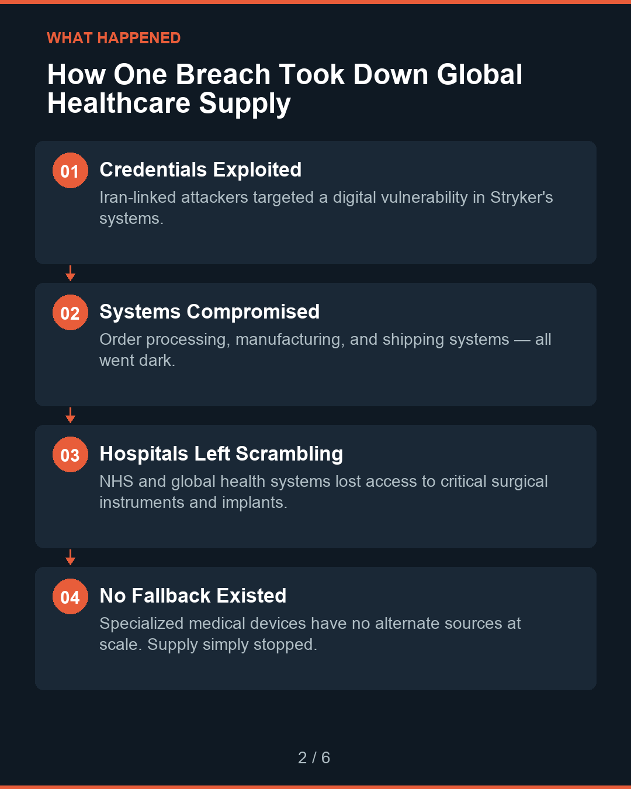
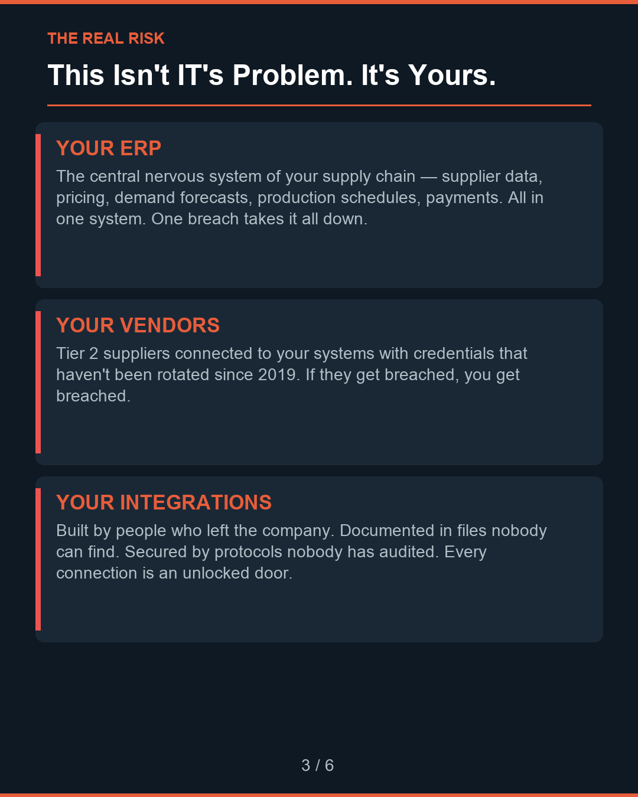
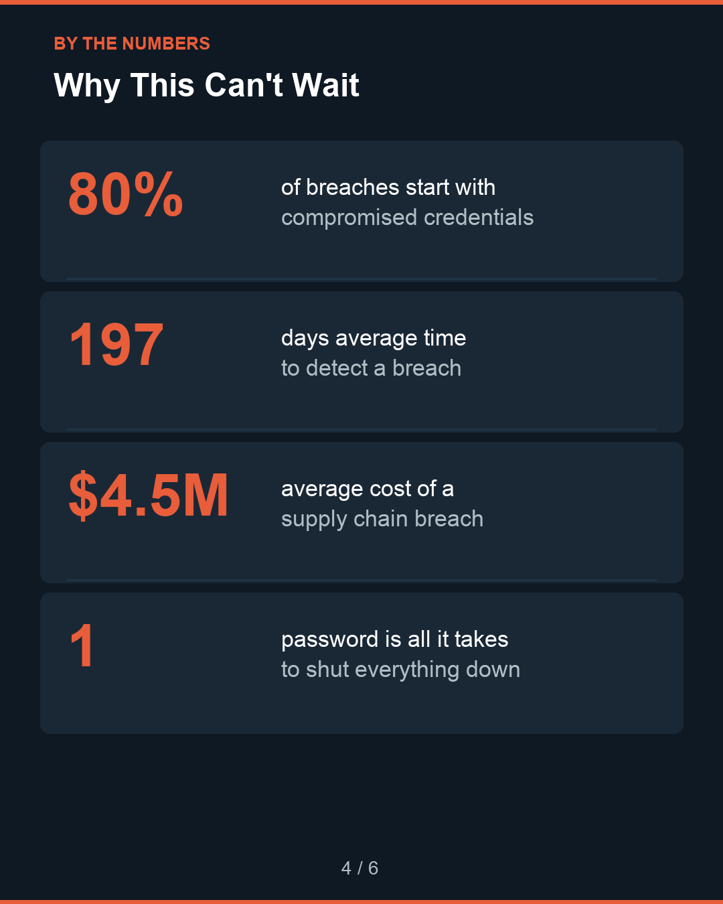

A visual breakdown of how one cyberattack shut down a $20B company's global supply chain — and the 5 questions every procurement leader should be asking this week.
By John Foley • March 2026



1 / 6
This carousel summarizes the key points. For the complete analysis with actionable frameworks, read the full piece.